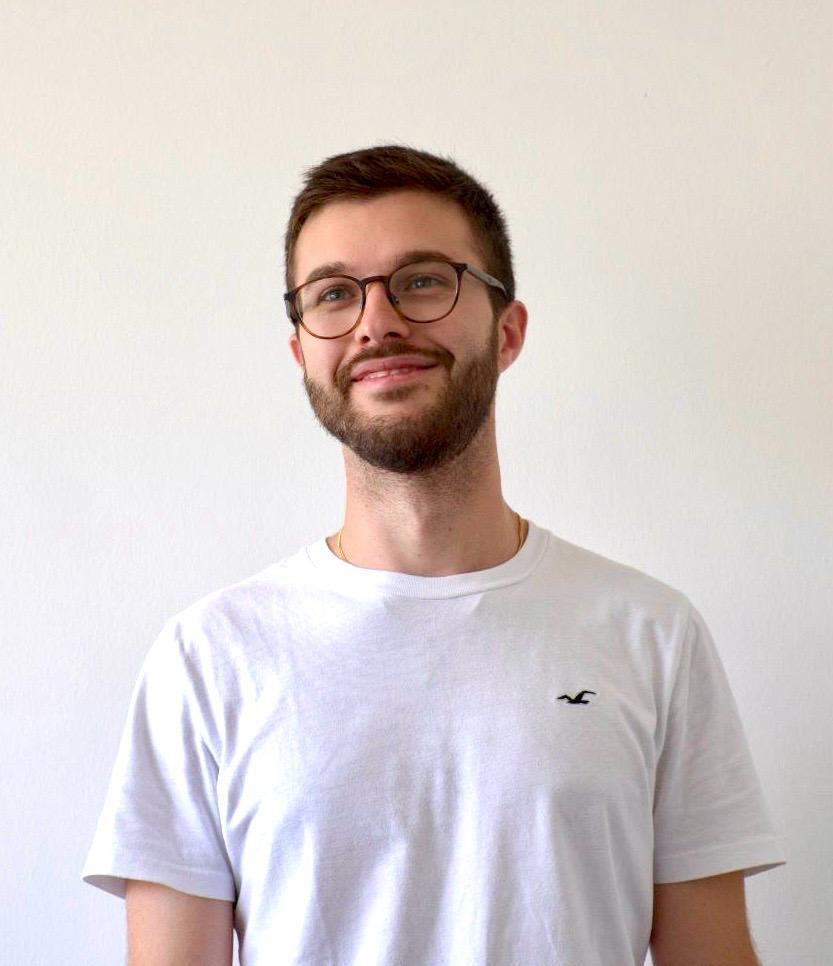

Articolo su rivista · MDPI · Agosto 2023

Sono Matteo Tagliavini, ingegnere informatico con un background magistrale incentrato su dati e robotica. Mi occupo di ricerca, sviluppo e programmazione, con l'obiettivo di trasformare dati e algoritmi in soluzioni applicate ed efficienti. Credo fortemente nel valore della condivisione della conoscenza, motivo per cui affianco all'ingegneria l'attività di docente tecnico.
Chi sono
Dopo la Laurea Magistrale in Ingegneria Informatica, con specializzazione in Data Engineering and Analytics, ho costruito un percorso ibrido tra dati, AI e robotica. Durante gli studi ho lavorato in un'azienda di Robot System Integration. Un'esperienza che mi ha tenuto sempre vicino al mondo della robotica e che ha ispirato anche la mia tesi di ricerca: l'integrazione di un robot collaborativo con una base mobile omnidirezionale e lo sviluppo di un controllo in ammettenza per rendere l'interazione uomo–robot più naturale.
Robotica collaborativa, interazione uomo-robot, data engineering
Sassuolo (MO), Italia
matteotagliavini97@gmail.com
Percorso
Sviluppo e integrazione di soluzioni di robotica industriale e collaborativa con brand quali ABB e FANUC. Attività di R&D su Robotics Engineering e programmazione offline per l'ottimizzazione dei processi produttivi, sistemi di visione 2D/3D per manipolazione e assemblaggio. Ruolo attivo nell'area Education & Train: creazione dell'Academy interna e definizione delle roadmap tecnico-didattiche.
Sviluppo di una soluzione pick&place con cobot ABB YuMi integrando visione 3D e AI per riconoscimento componenti: creazione e training dataset, calibrazione camera-robot e integrazione software in Python per l'esecuzione automatizzata.
Tesi: Interazione fisica Uomo-Robot mobile per il trasporto collaborativo.
Voto: 110/110 — conseguita il 16/07/2025.
Tesi: Implementazione di una soluzione robotizzata di prelievo componenti
mediante sistema di visione e integrazione di algoritmi di intelligenza
artificiale.
Voto: 90/110 — conseguita il 21/10/2021.
Ricerca
Toolbox
Claude Academy: Claude Code 101
Claude Academy: Claude 101
Contatti
Scrivimi per progetti, collaborazioni o solo per due chiacchiere.